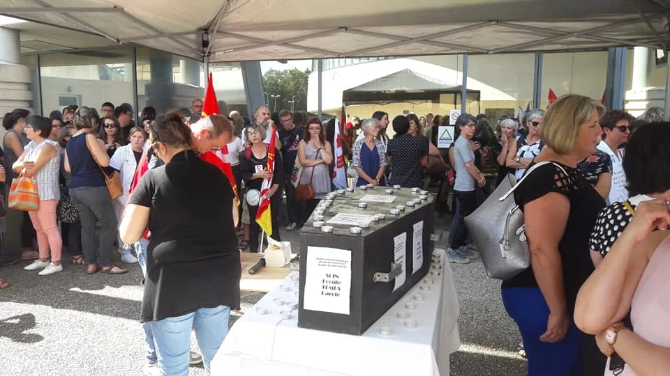

Publication fédérale
Notre soutien aux personnels hospitaliers en lutte
Date indiquée par Facebook · 10 septembre 2018
Repères éditoriaux
En septembre 2018, nous avons exprimé notre soutien aux personnels hospitaliers mobilisés. Deux photographies accompagnent la publication.
Texte conservé avec la publication
Total soutien du PCF 79 au personnel hospitalier en lutte!

Sources
Archive rouge · export Facebook · AR-0002-FB-02097
À lire aussi · Hôpital et médico-social. Défendre les lits et les structures d’accueil